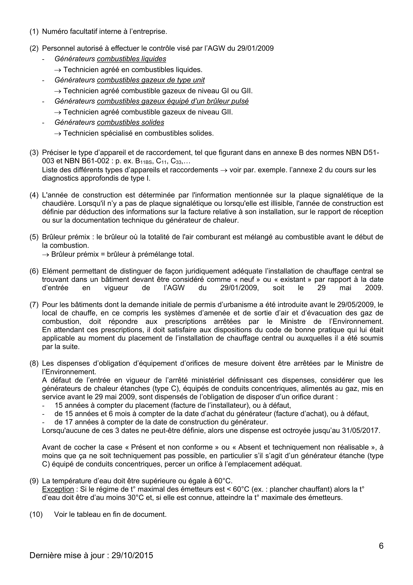
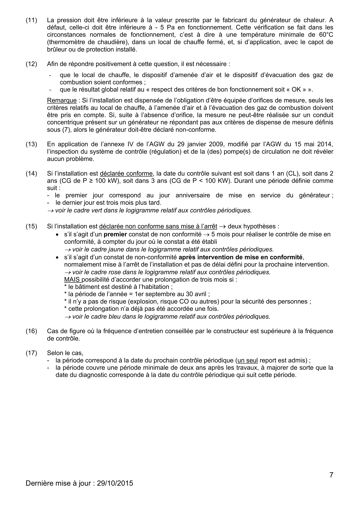
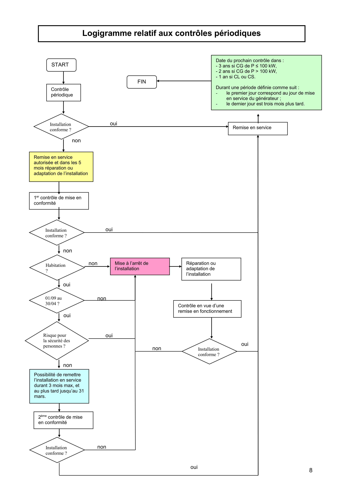
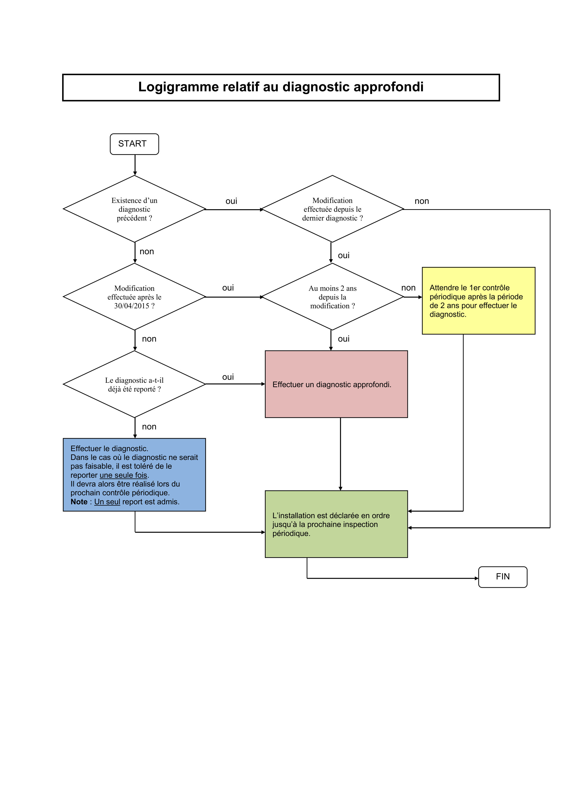
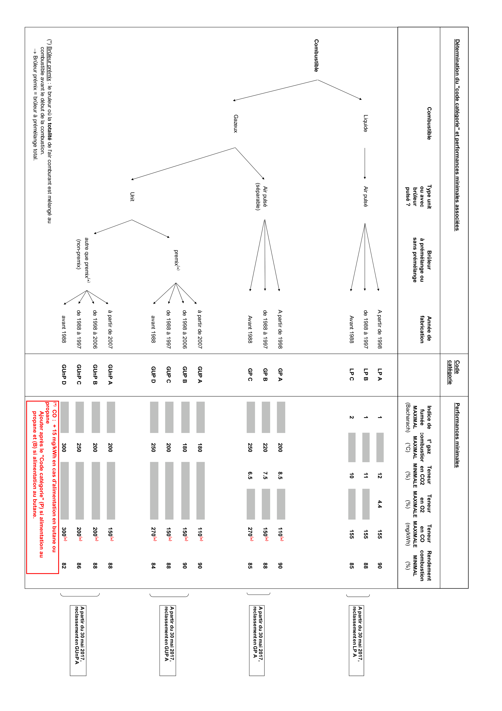

| Date du contrôle : {{controlDate}} | N° attestation(1) : {{attestNumber}} |
|
Technicien agréé
L
GI
✓GII
Technicien spécialisé en combustibles solides |
Le demandeur du contrôle ✓Propriétaire de l’installation de chauffage central. {{recipientCapacity}} du bâtiment contenant l’installation de cc. Autre (préciser) |
| Nom et prénom : {{techName}} | Nom et prénom : {{clientName}} |
| N° d’agrément (si CL ou CG) : {{techAgrement}} | Entreprise (si pertinent) : |
| Nom entreprise : {{company}} | Rue : {{clientStreet}} N° : {{clientNumber}} |
| Tél : {{techPhone}} | Code postal & localité : {{clientCity}} |
| Fax ou courriel : {{techEmail}} | Tél : |
| N° Entreprise (BCE) : {{bce}} | Fax ou courriel : |
| Localisation du générateur si différente : | |
| Nb de générateurs dans le local : 1 | ✓1 allure plusieurs allures nombre : modulant |
| Identification du générateur : | si gaz : unit ✓air pulsé (séparable) |
| Raccordement : B(3), C(3) Type brûleur : {{raccordementDetail}} | prémix(5) ✓non-premix |
| A condensation : oui ✓non Plaque signalétique : Absente Présente | Marque : Junkers |
| Année de construction(4) : {{year}} Type : {{burnerModel}} | N° série : {{serial}} |
| Puissance nominale utile : {{powerKw}} kW | Fluide caloporteur : Eau Vapeur basse pression Huile thermique |
| Production de chaleur : | Chauffage ECS Chauff. + ECS |
Introduction de la demande initiale de permis d’urbanisme du bâtiment contenant le local de chauffe(6) : ✓Avant le 29/05/2009(7) · Après le 29/05/2009
| Conformité de la ventilation du local de chauffe : | ✓OUI NON |
| Conformité du dispositif d’amenée d’air comburant : | ✓OUI NON |
| Conformité du dispositif d’évacuation des gaz de combustion : | ✓OUI NON |
Le générateur est-il dispensé de l’obligation d’être équipé d’orifices de mesure(8) ? OUI ✓NON → ✓Présent et conforme Présent et non conforme Absent et techniquement non réalisable
| Paramètre | Indice de fumée Max. (Bacharach) | t° nette gaz Max. (°C) | Teneur CO₂ Min. (%) | Teneur O₂ Max. (%) | Teneur CO Max. (mg/kWh) | Rend. combustion Min. (%) |
|---|---|---|---|---|---|---|
| Performances minimales (10) | ||||||
| Valeurs mesurées | {{flueTemp}} | {{co2}} | {{o2}} | {{co}} | {{efficiency}} | |
| Puissance maximale | ||||||
| Allure 1 / Pmin | ||||||
| Allure 2 (25 %) | ||||||
| Allure 3 (50 %) | ||||||
| Allure 4 (75 %) | ||||||
| Comparaison | OK | OK | OK | OK | OK | OK |
| Résultat global | OK | |||||
ATTENTION : les tickets sur lesquels figurent les résultats des mesures, mentionnant l’heure et la date, doivent être agrafés sur cette attestation.
| Pression cheminée (Pa) : | Pression pompe (bar) : |
| Température d’eau (°C) : | Gicleur — marque & type : |
| Gicleur — débit (gal/h) : | Gicleur — angle (°) : |
| La régulation fonctionne-t-elle en mode automatique ou manuel ? | ✓AUTO MAN |
| Le thermostat d’ambiance fonctionne-t-il ? | ✓OUI NON |
| L’horloge est-elle correctement réglée ? | ✓OUI NON |
| Chauffage programmé en mode réduit la nuit ? | ✓OUI NON |
| Indices de dysfonctionnement de la pompe ? | OUI ✓NON |
| ✓En cas de conformité — prochaine inspection périodique | entre le {{nextFrom}} et le {{nextTo}} |
| En cas de non-conformité — mise en conformité | au plus tard le … |
| Remise en service après mise à l’arrêt | |
| ✓Entretien conseillé par le constructeur | au plus tard le 15/10/20{{co}} |
| ✓Diagnostic approfondi | entre le {{nextFrom}} et le {{nextTo}} |




